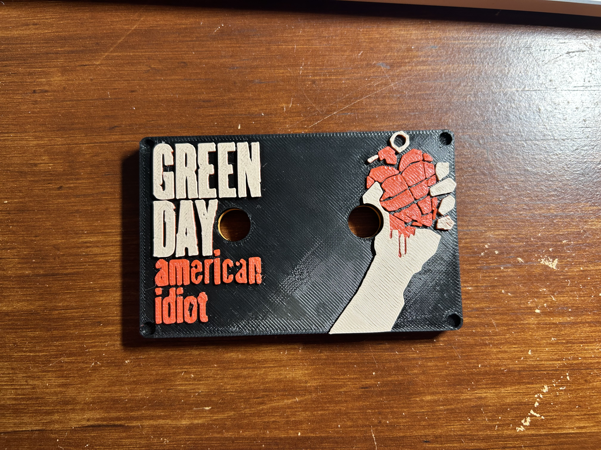
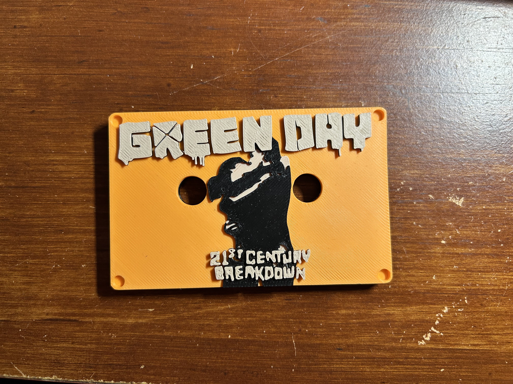
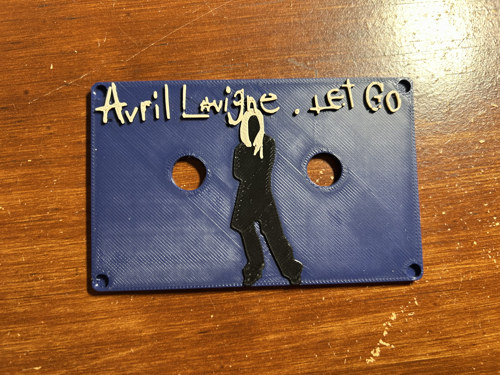
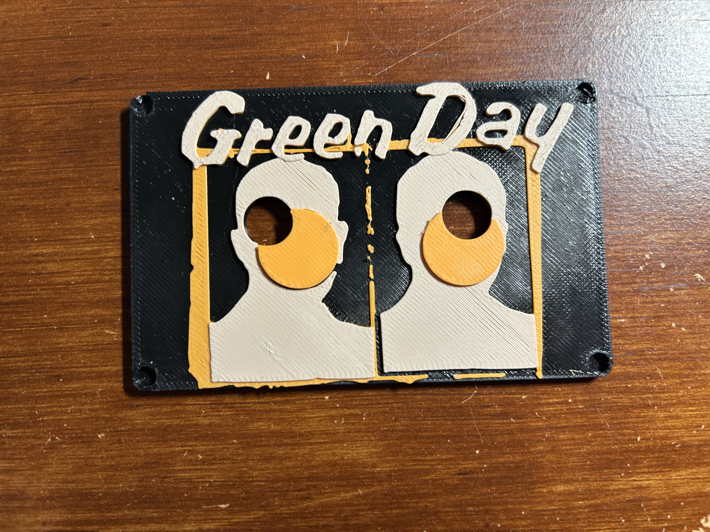
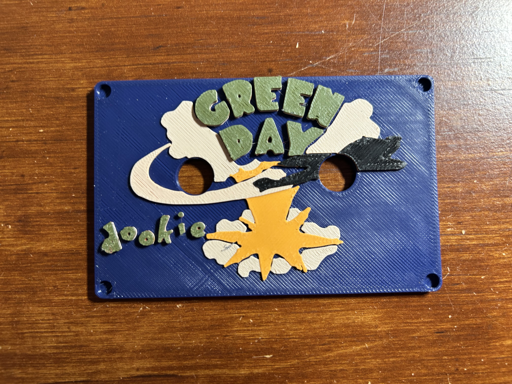
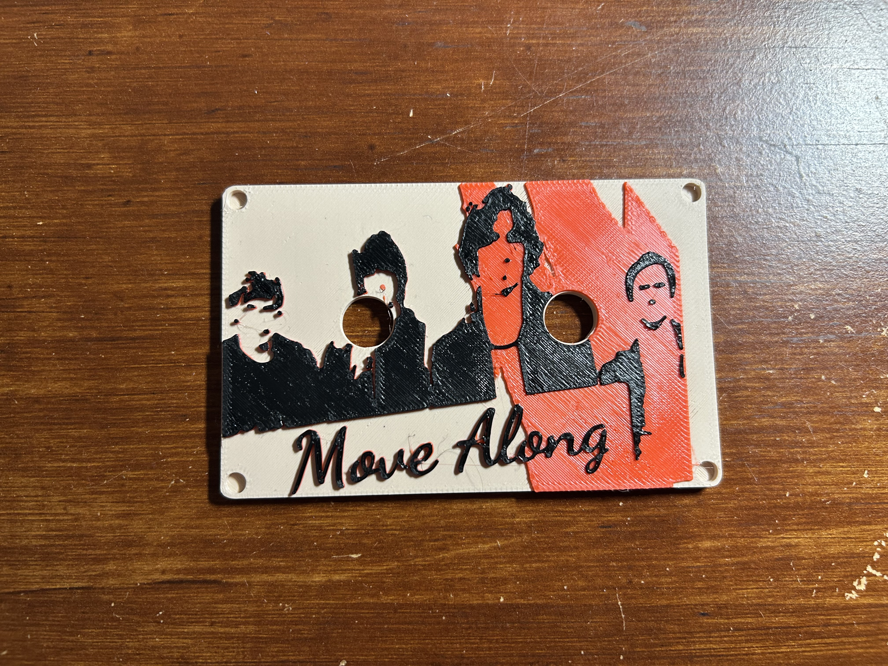
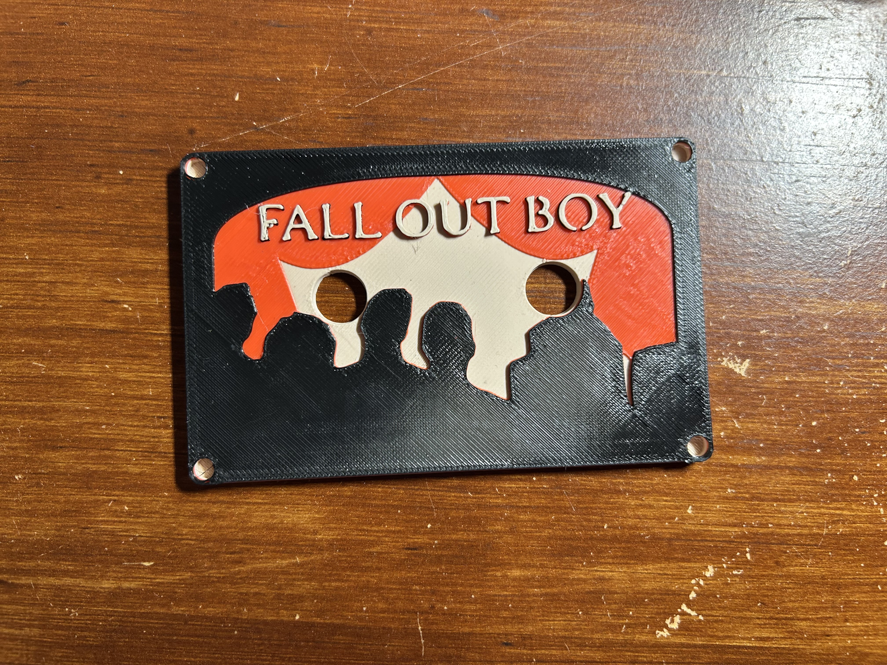
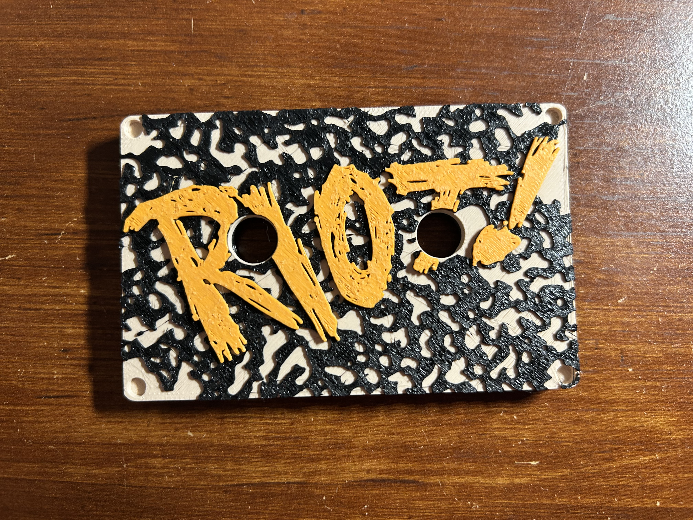
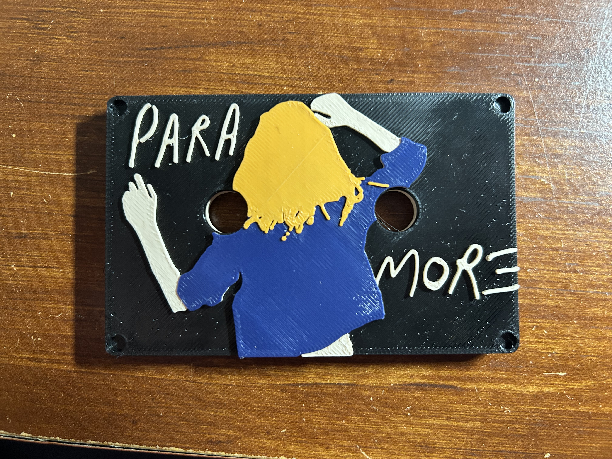

Linux bassed Walkman because my school banned phones
A year ago my school banned us from using our phones. Now there was probably a smart reason why they did this, but what it meant for me was no Green Day for 7 hours a day. Naturally I couldn't let this happen so I did the most logical thing:
Step one: Buy a broken walkman off ebay
You wouldn't belive how expensive a non functional one of these is, but luckally I got one.
Step two: Take it apart
This is pretty easy
Step three: Order a bunch of crap online
It's going to take weeks to ship. Lucaklly in the mean time you can go to:
Step four:
So the real walkmans used magnetic tapes to store music. It’s really amazing how they pulled it off. If you ever want to be amazed look up how a cassette tape is manufactured. Anyways I can’t pull something like that off cause I’m not good at my job or something. But I can cheat at it. Because I have something the 80s didn’t. Tiny computers. By using a small digital system I can bypass the need for cassette tapes all together. So my plan is to make small 3d printed cassette style devices and put an NFC tag inside each one. Now when I was first planning this I didn’t know that people didn’t print cover art onto the cassettes like they did record sleeves but I’d already committed to a much cooler plan than boring plastic rectangles. Now my plan was to quickly make one cassette and print some art onto it just to have something to test off of. But I got really carried away making these and I made way too many so here’s all my work on each album. Along with my thoughts on the albums because why not.
(Note I used photoshop for the first few albums but switched over to Photopea because it actually works consistently. Thought it sends me sad messages asking why I’m using an ad blocker which I’m not so don’t be guilt tripped by them)
American Idiot
This is the first one I made so I wasn’t very efficient in the timelapse but it still came out quite well for being the first one. Now this is the greatest album ever created and there’s not really much more to say. I’m very happy with how it came out.

21st Century Breakdown
I’m also very happy with how the art for this one came out. It looks very nice and it’s a wonderful album.

Let Go
I had to go a little simpler with this one that I wanted and I probably should have done a little more with the background but all in all not bad. What a good album.
(this timelaps shows why the free version of Photoshop is so bad.) (Or I just don't know how to use it.) (Either way use Photopea it doesn't charge you to export your work.)

Nimrod
I’m very happy with this one, I wish I could have gotten the small text on the stickers but that wasn’t going to happen. Very good album.

Dookie
This one is nice but I ran out of red filament so use your imagination. Also this is the 2nd best album of all time.

Move Along
I didn’t think this one would work. But it did, so that’s fun. Great album.

From Under the Cork Tree
This one came out so well I definitely one of the best ones. Dance Dance is awesome.

Riot
I couldn’t get all the little words to come out that small so I tried to bring in the black and white with the marbled look of a composition notebook because I thought the artwork looked like something that would have been sketched on the side of a notebook. crushcrushcrush is a banger and Paramore is awesome.

Paramore
This one came out pretty well though my printer had some trouble with the thinner lines. Great album.

Direct Hits
I keep forgetting to print this one so I’ll put in a photo when it’s done. Great album.

Death of a batchelor
I’m still out of red filament.

Step five:
Now I'm still in the process of finilising this project so to avoid spreading lies before I know what I'm going to do. I will be updating the rest of this in the next few days.